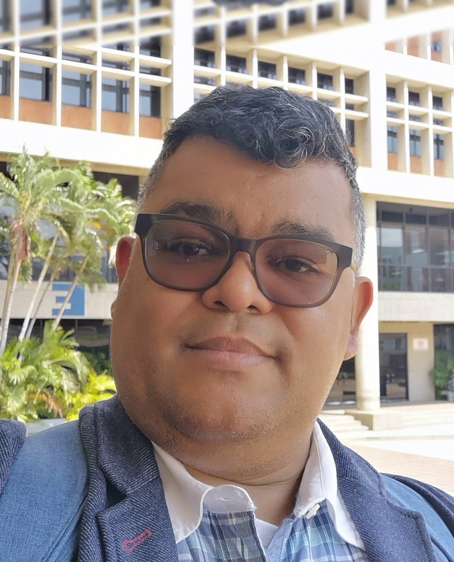

Inteligencia artificial en educación
Co-inteligencia docente-IA, agencia epistémica del estudiante y uso ético de la IA en el aula.

Hola, soy Leonar Socarrás Molina, PhD, docente-investigador en IA aplicada a la educación, STEM y Diseño Universal para el Aprendizaje. Trabajo para que la tecnología llegue con sentido a las aulas más diversas y vulnerables del Caribe colombiano.
Abre cada sección para ver el detalle.
Soy ingeniero de sistemas, docente e investigador colombiano. Mi formación reúne ingeniería, educación y gestión: Doctor en Ciencias, mención Gerencia, con estancia postdoctoral en Gerencia de la Ciencia y la Tecnología, y recién culminado el Doctorado en Ciencias de la Educación. Actualmente curso la Maestría en Inteligencia Artificial de la Universidad de La Sabana.
Investigo la intersección entre inteligencia artificial, educación y transformación social, con énfasis en modelos STEM, pensamiento computacional y Diseño Universal para el Aprendizaje en contextos diversos y vulnerables. Trabajo desde paradigmas constructivistas, sociocríticos y humanistas, buscando conocimiento aplicado con impacto en el aula.
Co-inteligencia docente-IA, agencia epistémica del estudiante y uso ético de la IA en el aula.
Robótica, sensores y ciencia ciudadana en la educación secundaria.
Modelos inclusivos para estudiantes diversos y neurodivergentes.
Analítica del aprendizaje y análisis de la escritura de estudiantes.
Q-Learning, DQN y transferencia con modelos preentrenados.
Transformación de prácticas pedagógicas desde la escuela, con la comunidad.
Ciencia Latina Revista Científica Multidisciplinar, 10(4)
Leer artículo (DOI) →Revista Multidisciplinar Epistemología de las Ciencias
Leer artículo (DOI) →SUMMA, 7(2)
Leer artículo (DOI) →Télematique. Revista Electrónica de Estudios Telemáticos
Ver en Dialnet →SUMMA. Revista disciplinaria en ciencias económicas y sociales, 3(2)
Leer artículo (DOI) →REDIELUZ, Universidad del Zulia
Leer artículo →INGENIUM, Centro Tecnológico de Investigación y Consultoría en Ingeniería
INGENIUM, Centro Tecnológico de Investigación y Consultoría en Ingeniería
Postdoctorado en Gerencia de la Educación Superior, URBE
Estudio hermenéutico-dialéctico sobre cómo se evalúa al profesorado universitario, con círculos de validación del constructo junto a los propios actores.
Tesis de maestría, Fundación Universitaria del Área Andina
Investigación-acción participativa en matemáticas de grado séptimo que dio origen al Modelo STEM-DUA 3.0.
Estado del conocimiento
Revisión sistemática con PRISMA, SPIDER y GRADE-CERQual, con análisis bibliométrico en R.
Programa de investigación escolar
Tres estudios sobre el trabajo conjunto entre estudiantes e IA en los grados octavos de la IE Manuel Germán Cuello Gutiérrez.
Propuesta posdoctoral
Grafo de conocimiento organizacional y gobernanza del contexto con IA, replicable en instituciones educativas oficiales mediante un modelo de lenguaje pequeño.
Maestría en IA y postdoctorado
Construcción de un índice cuantitativo de novedad para genomas de bacteriófagos diseñados con los modelos Evo.
Marco propio
Diez capítulos de gobernanza epistemológica, metodológica, ética y de la evidencia, con auditorías, indicadores y listas de chequeo.
Ciencia ciudadana
Monitoreo del río Cesar con una red de cuatro estaciones ESP32, backend en Node.js y SQLite, y un tablero web con índice de calidad del agua anclado a la norma colombiana.
Samsung Solve for Tomorrow 2026
Monitoreo fisiológico con wearables (micro:bit y ESP32) para la educación física en grado décimo, con Design Thinking y enfoque DUA.
Software educativo
Aplicación web sin conexión para matemáticas de grados 6 a 11, organizada por los cinco pensamientos matemáticos, con apoyos DUA y actividades H5P.
Juego educativo
Juego multijugador de estrategia económica ambientado en la antigua Magdalena Grande, para enseñar probabilidad, proporciones y economía desde la reciprocidad.
Aplicación móvil
App en MIT App Inventor conectada por Firebase a un invernadero simulado en Tinkercad con Arduino: riego, ventilación, iluminación y sensores.
Proyecto STEM de aula
Arduino UNO, sensor DHT11, pantalla LCD y alarmas visuales y sonoras, documentado bajo el enfoque TPACK.
Sistema IoT
ESP32 con TinyML y Raspberry Pi con un agente de IA que monitorea el cultivo, controla riego, nutrición y energía, y emite alertas tempranas.
Bachillerato sabatino para adultos
Guías semanales sobre hardware, historia de la computación, herramientas digitales y el ecosistema de IA de Google.
Maestría en IA, U. de La Sabana
Clasificación de cinco flores con partición sin fuga, líneas base y transferencia desde DINOv2.
PythonAprendizaje por refuerzo
Q-Learning y DQN mejorados sobre Gymnasium, con simulador HTML5.
PythonAprendizaje por refuerzo
Q-Learning tabular frente a DQN en MountainCar-v0, con visualizaciones y pruebas automatizadas.
PythonSimulación y Aprendizaje por Refuerzo
DQN que aprende a jugar Pong desde píxeles.
Además: diplomados de la Universidad de La Sabana en IA con Deep Learning, Big Data y Power BI, STEM y DUA; curso en la Universitat Politècnica de València (2026); especializaciones tecnológicas del SENA en Bases de Datos y Web Master.
Estoy abierto a colaboraciones internacionales, redes de investigación y estancias postdoctorales.
La educación, la ciencia y la tecnología deben converger para construir una sociedad más justa, inclusiva y consciente.

Escanea el código para guardar mi contacto y abrir mis perfiles: correo, LinkedIn, ORCID y GitHub.